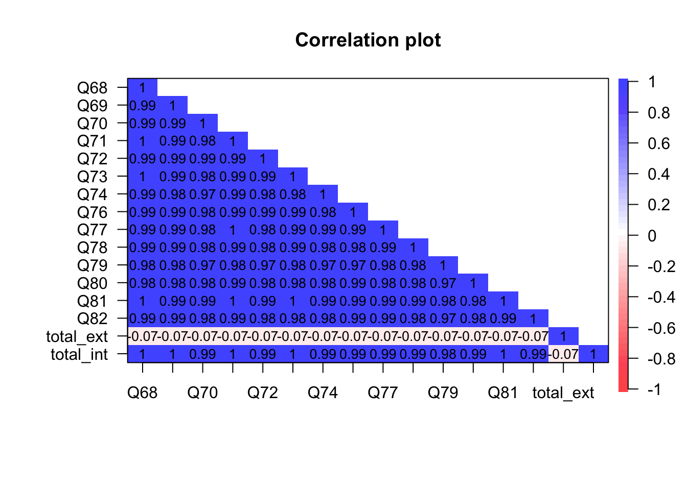

Data Preparation
This chapter documents our decisions surrounding how to prepare the data for analysis. Here we get into the weeds. We begin with loading the data from the original data file. From this we select a subset of just the items to which we apply labels and recode so that they begin from 0. We deal with missing data. The chapter concludes with a final set of datasets for use in the remaining chapters.
Load data
The data are contained in an Excel file, simply named “data.xlsx”, in the “data” folder of this project. The important thing is to keep all the data in the same folder within the larger “SHAS Validity” project folder.
# LOAD ORIGINAL DATA
library(readxl) # for reading the source Excel file
shas <- read_excel("data/data.xlsx") # load Excel fileSelect items
Which items should we include for analysis? The first 13 columns in the original data file report data from several screening items that were placed at the beginning of the questionnaire. But because they are constant and not variable, they don’t seem to have a place in scale development. Therefore it seems the important columns range from columns 14 to 97. The first set of items measure the External Events scale. These 52 items range from columns 14 to 35. The second set of items measure the Internal States scale, and these 14 items range from columns 66 to 79. The last set of items capture demographic variables, and these range from columns 80 to 97.
# SELECT ITEMS
all <- shas[, 14:97] # select items, dems from columns 14-79
all <- subset(all, select = -c(Ext_Avg:Global_Avg)) # remove columns for now
items <- all[, 1:66]Apply item labels
To aid interpretation it will be helpful to label the items.
# LABEL THE ITEMS
library(Hmisc)
# names(items) <- c( # EXTERNAL EVENTS ITEMS Q7 = 'EQ7 -
# Pastor speaking on God's behalf', Q10 = 'EQ10 - Asked to
# give up personal goals by pastor', Q11 = 'EQ11 - Disagree
# w/pastor portrayed as evil', Q16 = 'EQ16 -
# Church/community abandoning me in difficult time', Q17 =
# 'EQ17 - Treated as less than b/c my sexual orientation',
# Q18 = 'EQ18 - Church/pastor discourage critical
# thinking', Q19 = 'EQ19 - Behavior excessively monitored
# by pastor/group', Q20 = 'EQ20 - Members pressured to give
# money despite financial hardship', Q21 = 'EQ21 - Taught I
# would risk Hell if left my church/group', Q22 = 'EQ22 -
# Expected to follow pastor/leader rules re:
# dating/marriage/sex', Q23 = 'EQ23 - Prayer replacing
# needed medical interventions', Q24 = 'EQ24 - Expected to
# consult pastor/leader before making non-religious
# decisions', Q25 = 'EQ25 - Feeling unable to raise
# questions and issues', Q26 = 'EQ26 - Pressured to forgive
# abuser while abuse was ongoing', Q27 = 'EQ27 - Denied
# opportunities to serve b/c of my gender', Q28 = 'EQ28 -
# Leadershi/group protecting abusive individuals', Q29 =
# 'EQ29 - Feeling special when in pastor’s good graces;
# otherwise ignored', Q30 = 'EQ30 - Deterred from seeking
# mental health treatment/counseling/medication', Q31 =
# 'EQ31 - Shunned/ignored by pastor/church/group', Q32 =
# 'EQ32 - Feeling unable to express unhappiness', Q34 =
# 'EQ34 - Scripture used to justify physical
# punishment/severe discipline', Q35 = 'EQ35 - Taught to
# distrust my emotions', Q36 = 'EQ36 - Mental/physical
# problems interpreted as spiritual/moral weakness', Q37 =
# 'EQ37 - Made to feel less spiritually mature than
# pastor/leadership', Q38 = 'EQ38 - Unrealistic demands
# placed on my moral/religious behavior', Q39 = 'EQ39 -
# Made to feel shame over natural sexual desires (not
# actions)', Q40 = 'EQ40 - Threatening Divine punishment to
# keep group members in line', Q41 = 'EQ41 - Denied
# opportunities to serve because of my sexual orientation',
# Q42 = 'EQ42 - Seeing others shamed/shunned by
# pastor/leader/group', Q43 = 'EQ43 - Shamed by
# pastor/group for poor spiritual/moral performance', Q44 =
# 'EQ44 - Love/acceptance offered only for high
# spiritual/moral performance', Q45 = 'EQ45 -
# Developmentally-inappropriate/anxious Hell/Satan/demons
# taught to young children', Q46 = 'EQ46 - Treated as less
# than because of my skin color', Q47 = 'EQ47 - Medical
# care being postponed/withheld for religious reasons', Q49
# = 'EQ49 - Leadership/group protecting and elevating
# abusive individuals', Q50 = 'EQ50 - Treated as less than
# because of my gender', Q51 = 'EQ51 - Extreme pressure to
# be pastor/missionary/spiritual leader', Q52 = 'EQ52 -
# Blamed for harm I suffered rather than blaming who harmed
# me', Q53 = 'EQ53 - Scripture used to justify abusive
# parent-child behavior', Q54 = 'EQ54 - Being explicitly
# taught to distrust my intuitions', Q55 = 'EQ55 - Hearing
# cultural references in sermons unfamiliar to my race/eth.
# subculture', Q56 = 'EQ56 - Being made to feel I was
# crazy/weird for doubts/questions', Q57 = 'EQ57 -
# Developing mental/physical ailments from conforming to
# group/leader’s expectation', Q58 = 'EQ58 - Terror/horror
# used to motivate religious decisions', Q59 = 'EQ59 -
# Pastor/group blame victim for their abuse', Q60 = 'EQ60 -
# Encouraged by leader to stay in abusive marriage', Q61 =
# 'EQ61 - Developmentally-inappropriate/anxious end times
# descriptions taught to young children', Q62 = 'EQ62 -
# Scripture used to justify physical violence', Q63 = 'EQ63
# - Shamed by pastor/group for raising questions or
# concerns', Q64 = 'EQ64 - Witnessing women pressured to
# stay in unfaithful/abusive marriages', Q65 = 'EQ65 - Cut
# off/shunned by more religious family members', Q66 =
# 'EQ66 - Others treated as less than due to their sexual
# orientation', # VARIABLE LABELS: INTERNAL STATES ITEMS
# Q68 = 'IQ68 - Anxiety attacks triggered by religious
# stimuli', Q69 = 'IQ69 - Lack of spiritual
# direction/purpose', Q70 = 'IQ70 - Feeling betrayed by
# God', Q71 = 'IQ71 - Avoiding religious
# activities/settings to reduce distressing feelings', Q72
# = 'IQ72 - Feeling as if God harmed me directly', Q73 =
# 'IQ73 - Self-hatred or self-loathing', Q74 = 'IQ74 -
# Sadness over the loss of my faith/religious community',
# Q76 = 'IQ76 - Feeling I wasted years of my life in a
# church/set of beliefs', Q77 = 'IQ77 - Anger upon
# reflecting on negative religious experiences', Q78 =
# 'IQ78 - A lack of self-worth', Q79 = 'IQ79 - Distrust of
# God', Q80 = 'IQ80 - Feeling isolated', Q81 = 'IQ81 -
# Nightmares about my negative religious experiences', Q82
# = 'IQ82 - Having trouble navigating life outside my
# church/community')Select item clusters
We select two subsets of the item data, one from just the External Events items and the other from the Internal States items.
ext_items <- items[, 1:52]
int_items <- items[, 52:66]Dichotomized data
Some IRT models (such as the Rasch model) and their estimation procedures in various R packages are based on dichotomous data (0=incorrect, 1=correct) rather than the polytomous data that comes from Likert scales. It is also possible that the extra categories create noise and improved SHAS items might use fewer response categories. Here we create several data sets of dichotomized SHAS items.
# DICHOTOMIZED DATA SETS
ditems <- items
ditems[ditems == 2] <- 1
ditems[ditems == 3] <- 1
ditems[ditems == 4] <- 1
ditems[ditems == 5] <- 1
dext_items <- ext_items
dext_items[dext_items == 2] <- 1
dext_items[dext_items == 3] <- 1
dext_items[dext_items == 4] <- 1
dext_items[dext_items == 5] <- 1
dint_items <- int_items
dint_items[dint_items == 2] <- 1
dint_items[dint_items == 3] <- 1
dint_items[dint_items == 4] <- 1
dint_items[dint_items == 5] <- 1Missing data
Missing data can be an important problem. The problem has two parts. The first is how many data are missing. Obviously the more data are missing, the larger the barrier this problem poses to analysis. The second is the mechanism of missing data. Are the missing data randomly, or is there a pattern to the missing data - like a problematic item, or a distinct group of examinees who chose not to respond? Figure 1 presents two plots from the VIM package for missing data (Templ et al. 2021).
# VISUALIZE AND QUANTIFY MISSING DATA
library(VIM)
a <- VIM::aggr(all, plot = FALSE)
plot(a, numbers = TRUE, prop = FALSE)
Figure 1: Missing Data
The first plot in Figure 1 is a frequency distribution of the number of missing data entries for each item. This plot reveals very few missing data for the first set of External Events items, but nearly 200 missing entries for the second set of Internal States items and demographics. The raises two questions. The first is: Who were those examinees? We know that they responded to the first 52 items, then apparently quit the survey. Why? Was it just fatigue, or is there more to know about them? The second question is what to do with the information they actually did provide.
The second plot in Figure 1 illustrates the different combinations of missing entries. The blue squares represent cases with complete responses, and the red indicates missing data. The rows represent combinations of complete and missing responses. The bottom row of entirely blue squares represents complete data – examinees who responded to all of the items. The barplot on the right axis indicates that these were the most frequent combinations. The second most frequent combination was examinees who completed all of the External Events items and then quit the survey. Beyond that, there is no apparent order or pattern to the missing data.
Mechanism of missing data. McKnight et al. (2007) prescribe several approaches for investigating the mechanisms of missing data. An appropriate first step is to test whether the data are Missing Completely At Random (MCAR) with the use of Little’s test Little (1988). This is a chi-square test of the difference between the observed pattern of missing responses and the pattern of responses that would expected if missingness were completely random. We report the results of this test in Table ??.
library(naniar)
library(knitr)
knitr::kable(mcar_test(all))| statistic | df | p.value | missing.patterns |
|---|---|---|---|
| 2089.341 | 8663 | 1 | 117 |
The test is fairly conclusive. The p-value for the chi-square is 1, which means observed pattern of missing data do not diverge significantly from what would be expected if the data were missing completely at random.
Were examinees triggered? As mentioned above, a possible explanation of the missing data in the Internal States items is that examinees were triggered: After responding to the preceding 52 items calling to mind imagery of abusive external events, these examinees may have been done with the survey. A possible test of this hypothesis is an examination of the relationship between a total score of responses to the External Events items and a score of total missingness on the Internal States items. The empirical work to test this hypothesis is laid out in the following code chunk. The items measuring external events are summed into a total score such that a higher value indicates more exposure to abusive external events. The items measuring internal states are coded so that 1=missing and 0=all others response, and these items are summed into a score of total missingness.
# 1. ISOLATE THE DATA
miss_set <- items
# 2. DUMMY CODE INTERNAL STATES ITEMS
miss_set$Q68[miss_set$Q68 > 0] <- 0
miss_set$Q69[miss_set$Q69 > 0] <- 0
miss_set$Q70[miss_set$Q70 > 0] <- 0
miss_set$Q71[miss_set$Q71 > 0] <- 0
miss_set$Q72[miss_set$Q72 > 0] <- 0
miss_set$Q73[miss_set$Q73 > 0] <- 0
miss_set$Q74[miss_set$Q74 > 0] <- 0
miss_set$Q76[miss_set$Q76 > 0] <- 0
miss_set$Q77[miss_set$Q77 > 0] <- 0
miss_set$Q78[miss_set$Q78 > 0] <- 0
miss_set$Q79[miss_set$Q79 > 0] <- 0
miss_set$Q80[miss_set$Q80 > 0] <- 0
miss_set$Q81[miss_set$Q81 > 0] <- 0
miss_set$Q82[miss_set$Q82 > 0] <- 0
miss_set$Q68[is.na(miss_set$Q68)] <- 1
miss_set$Q69[is.na(miss_set$Q69)] <- 1
miss_set$Q70[is.na(miss_set$Q70)] <- 1
miss_set$Q71[is.na(miss_set$Q71)] <- 1
miss_set$Q72[is.na(miss_set$Q72)] <- 1
miss_set$Q73[is.na(miss_set$Q73)] <- 1
miss_set$Q74[is.na(miss_set$Q74)] <- 1
miss_set$Q76[is.na(miss_set$Q76)] <- 1
miss_set$Q77[is.na(miss_set$Q77)] <- 1
miss_set$Q78[is.na(miss_set$Q78)] <- 1
miss_set$Q79[is.na(miss_set$Q79)] <- 1
miss_set$Q80[is.na(miss_set$Q80)] <- 1
miss_set$Q81[is.na(miss_set$Q81)] <- 1
miss_set$Q82[is.na(miss_set$Q82)] <- 1
# 3. TOTAL SCORES ON EXTERNAL EVENTS ITEMS AND INTERNAL
# STATES MISSINGNESS
miss_set$total_ext <- rowSums(miss_set[, c(1:52)])
miss_set$total_int <- rowSums(miss_set[, c(53:66)])
miss_set2 <- miss_set[, c(53:68)] # just the total score, missingness# 4. CORRELATIONS
library(psych)
psych::corPlot(miss_set2[, 1:16], main = NULL, upper = FALSE)
Figure 2: Correlation Matrix: External States and Internal States Missingness
Figure 2 illustrates the correlations among the Internal States items (dichotomized according to their missingness (1=missing, 0=all others)), the total score from the external states (total_ext), and the total score of internal item missingness (total_int). The correlation of total_ext with all the other items is nearly zero, suggesting that more exposure to abusive external states did not predict nonresponse to the Internal States items. This finding is consistent with the finding from Figure ?? that the missing data appear to missing completely at random.
Missing data methods. There are several different ways to handle missing data. A common one is to delete all cases missing any data. This is called listwise deletion of data. Its primary advantages are simplicity, expedience, and analysis based on complete information. Its disadvantages are (1) disposal of the information offered by those examinees who responded to some items but not others, and (2) diminishment of the dataset, and with it, a reduction in statistical power. There are also methods of imputing values to missing responses. Here, for expedience, we use listwise deletion to create several datasets with complete data.
# LISTWISE DELETION OF MISSING DATA
all_l <- na.omit(all) # All items + demographics
items_l <- na.omit(items) # All Likert items
ext_items_l <- na.omit(ext_items) # Likert items for External Events post listwise
int_items_l <- na.omit(int_items) # Likert items for Internal States post listwise
ditems_l <- na.omit(ditems) # All dichotomized Likert items post listwise
dext_items_l <- na.omit(dext_items) # Dichotomized External Events items post listwise
dint_items_l <- na.omit(dint_items) # Dichotomized Internal States items post listwiseFinal datasets
# SAVE DATA FILES
write.csv(all, "data/all.csv", row.names = FALSE)
write.csv(items, "data/items.csv", row.names = FALSE)
write.csv(ext_items, "data/ext_items.csv", row.names = FALSE)
write.csv(int_items, "data/int_items.csv", row.names = FALSE)
write.csv(all_l, "data/all_l.csv", row.names = FALSE)
write.csv(items_l, "data/items_l.csv", row.names = FALSE)
write.csv(ext_items_l, "data/ext_items_l.csv", row.names = FALSE)
write.csv(int_items_l, "data/int_items_l.csv", row.names = FALSE)
write.csv(ditems_l, "data/ditems_l.csv", row.names = FALSE)
write.csv(dext_items_l, "data/dext_items_l.csv", row.names = FALSE)
write.csv(dint_items_l, "data/dint_items_l.csv", row.names = FALSE)